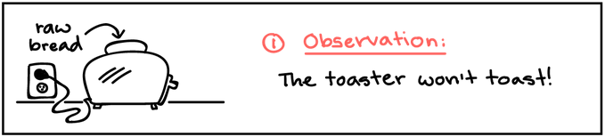
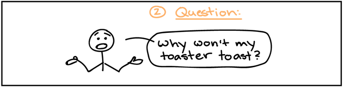
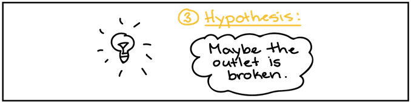
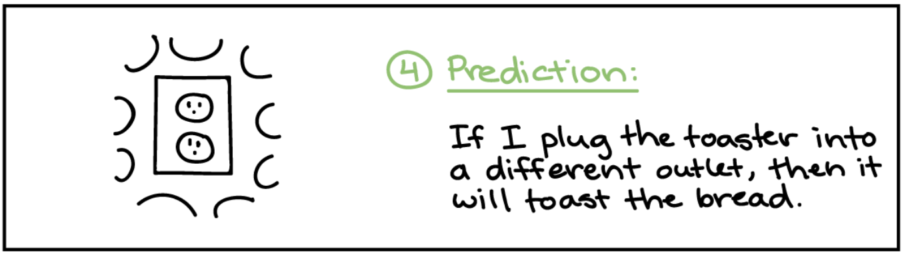
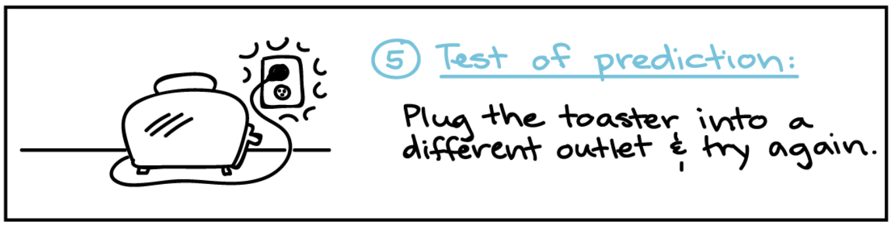
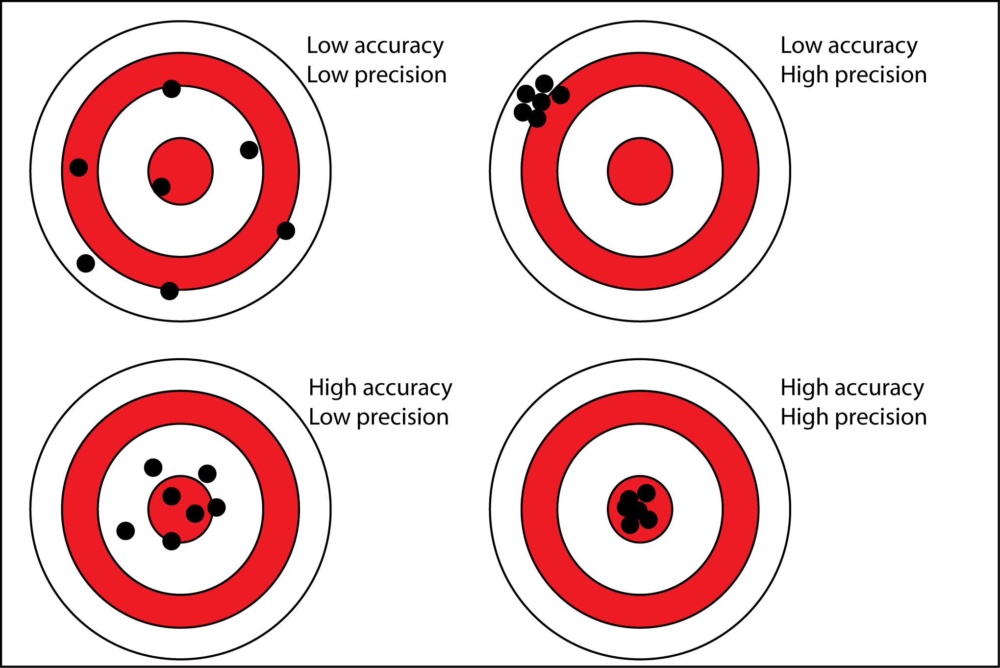
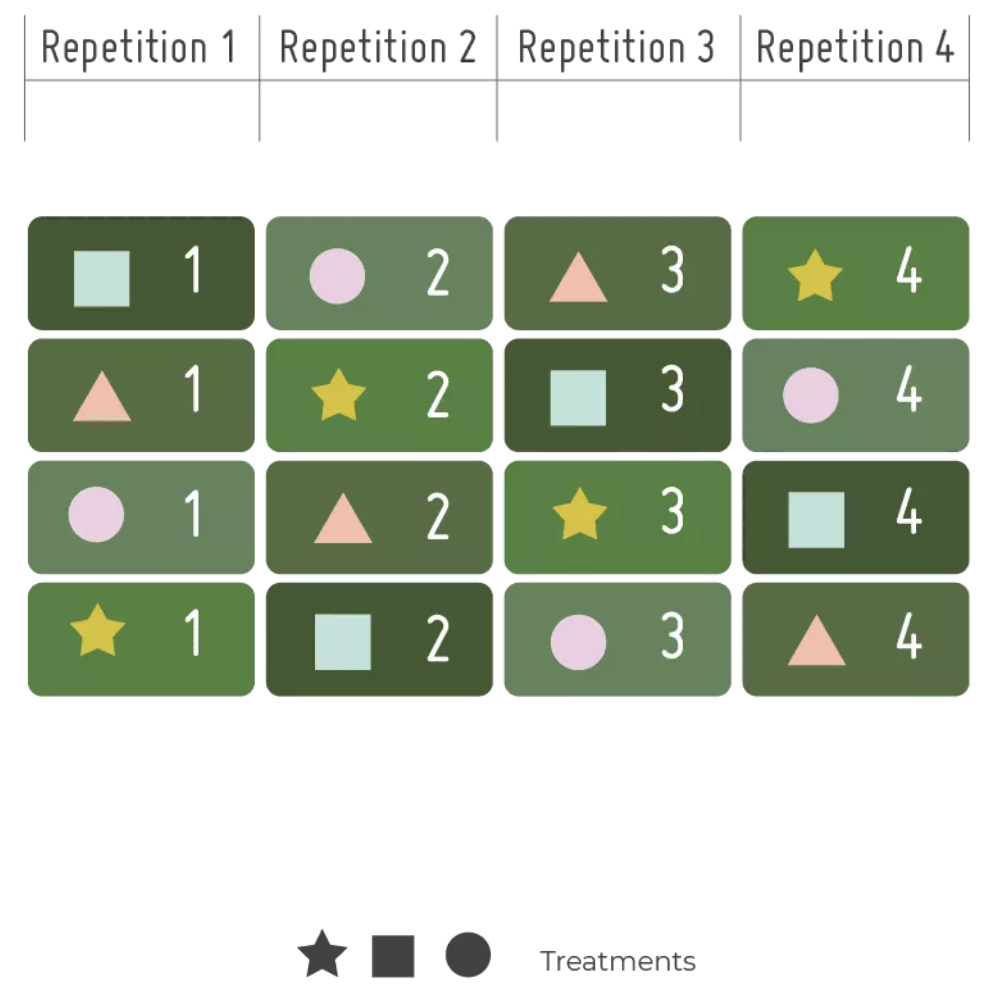
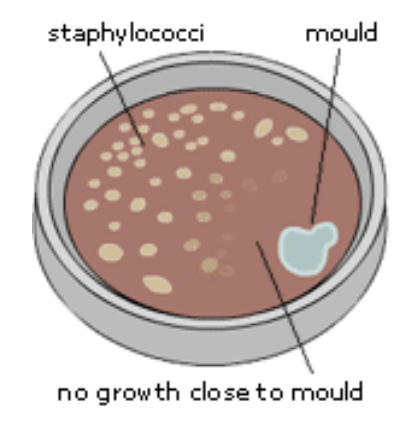
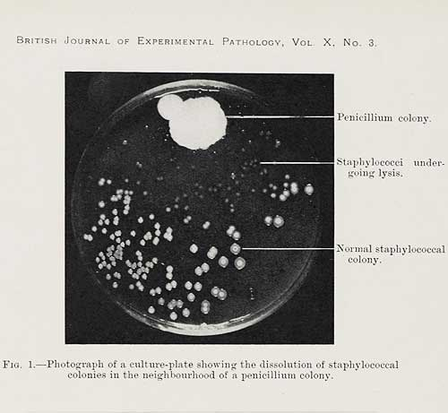

Session 2 — Scientific English
Start of class: scan the QR code on the session 1 material page to join the live quiz on the previous lesson.
Why is the sky blue? How do plants grow? What are stars made of?
Science starts with asking questions about the world around us.





If the toaster still doesn’t work in the new outlet, the hypothesis is rejected — time to try another one (maybe it’s the toaster itself, not the outlet).
Careful, systematic scrutiny of the world.
Sources of observations:
A clear, focused inquiry based on the observation.
Vocabulary: ambiguous — unclear or open to more than one interpretation.
Vague questions → vague hypotheses → hard-to-design experiments.
A testable and falsifiable statement proposing an answer to the question.
Warning
Watch out for spurious correlations — two things changing together doesn’t mean one causes the other.
Planning and organizing the procedure that will test the hypothesis.
| Scenario | Independent variable | Dependent variable |
|---|---|---|
| Plant growth | Amount of sunlight | Height of plants |
| Drug dosage | Dosage of a drug | Heart rate |
| Exam scores | ? | Exam scores |
What could the independent variable be in the exam scores example? (hours studied? sleep? something else?)
| Qualitative | Quantitative | |
|---|---|---|
| Nature | Descriptive, not easily measured | Numerical, measurable |
| Form | Observations, categories | Numbers from measurement/counts |
| Example | Colour of a flower, texture | Height (cm), temperature (°C) |
| Analysis | Thematic / content analysis | Statistical methods |
| Precision | Accuracy | |
|---|---|---|
| Definition | How closely repeated measurements agree with each other | How close a measurement is to the true value |
| Associated with | Consistency, reliability | Correctness, no systematic error |
| Example | Weighing something 5× and always getting 12.3 g | Weighing something and getting the true 12.5 g |
Tip
It’s possible to be precise but not accurate — consistent measurements can still all be wrong if there’s a systematic error.

Purpose of a control group:
Vocabulary: confounding variable — an outside factor that could distort the result.

In September 1928, Alexander Fleming was studying Staphylococcus bacteria at St. Mary’s Hospital, London.
He left petri dishes on his workbench while on vacation.
Upon returning, he noticed one dish had mould growing on it — with a clear area around the mould where bacteria seemed to be killed.

Question: What killed the bacteria near the mould?
Hypothesis: The mould (later identified as Penicillium) releases a substance that inhibits bacterial growth.
Fleming:
The substance killed a wide range of bacteria — but was not toxic to human cells.
This substance was later named penicillin.

Estimated lives saved to date: over 200 million
Scientific English — Liceo Einstein